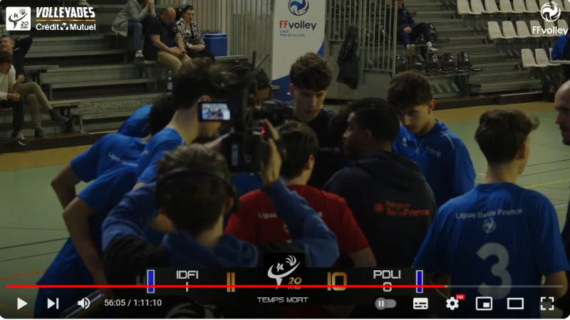
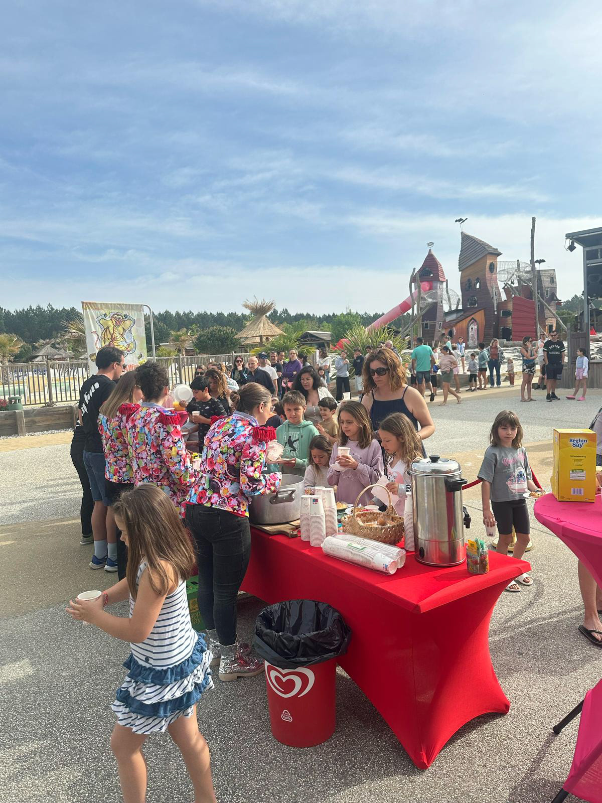
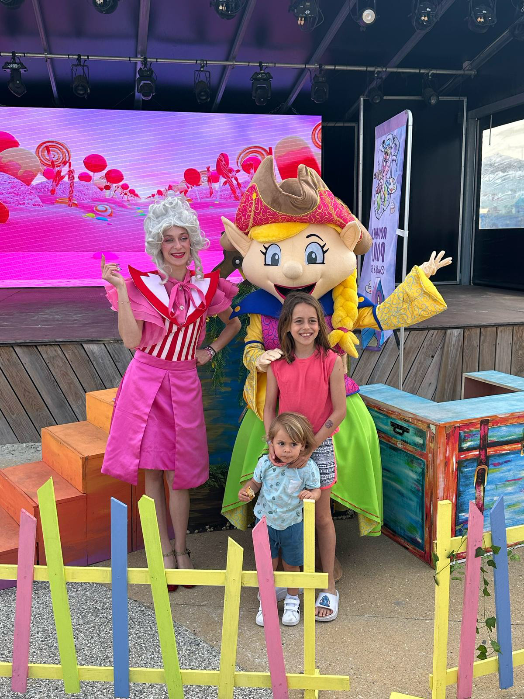

Terrain
Quatre expériences, quatre contextes différents.
Tourisme, sport fédéral, presse régionale, association. Dans chaque cas : des livrables concrets, des délais tenus, une vraie autonomie sur le terrain.
Saison 2024
Camping Capfun Lila — Angers
Community Manager & Créateur Vidéo
“Capter l'énergie d'un camping en plein été, en temps réel, avec des moyens réduits et sans perdre en qualité.”
- Tournage quotidien à l'iPhone et boîtier : +10 réels produits pour Instagram et TikTok sur la saison.
- Création de l'affichage interne hebdomadaire et des supports visuels pour les spectacles d'animation.
- Animation et modération des communautés avec une tonalité chaleureuse et bienveillante.
- Stratégie de contenu adaptée aux codes de chaque réseau : formats courts, musiques tendance, cuts rythmés.

Compétition officielle
Fédération Française de Volley
Cadreur Vidéo en Direct — Volleyades Crédit Mutuel
“Diffusion live nationale. Pas de droit à l'erreur sur les plans décisifs.”
- Cadrage d'action en direct lors des championnats de France des sélections régionales.
- Suivi fluide des trajectoires ultra-rapides, coordination réalisateur/régie.
- Anticipation des célébrations et transitions pour enrichir le flux YouTube FFVolley.

2024 — Radio France
France Bleu Mayenne
Rédacteur Web & Reporter de Terrain
“Journalisme sous contrainte de temps et de format. L'essentiel, sans superflu.”
- Rédaction de +20 articles web optimisés SEO pour France Bleu Mayenne.
- Couverture terrain : Flamme Olympique Paris 2024, Boucles de la Mayenne, Festival Les 3 Éléphants.
- Interviews sportives, brèves d'actualité, réseaux sociaux de la station.

Stage fondatif
Comité Handisport de la Mayenne
Chargé de Communication
“Première expérience professionnelle complète : de la conception à la diffusion.”
- Conception de flyers de promotion et affiches de recrutement (Canva, Photoshop).
- Couverture photographique des journées d'initiation au sport adapté.
- Animation de la page Facebook pour rendre visible l'engagement des athlètes.